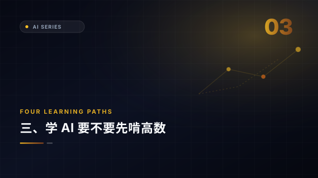

三、学 AI 要不要先啃高数：普通人现实可走的四条路
先选路，再补课。拆四条学习路径的门槛与回报，主推深耕行业叠加 AI 的复合路线，附避坑与免费资源清单。

前阵子有同学来问我：想学 AI，是不是得先把高数捡起来重修一遍。我没直接回答，先给他看了我的收藏夹——一门线性代数课，收藏了半年，进度 5%。真正把我领进门的，反倒是几门不讲数学的通识课。
回过头看，问题出在顺序上。学 AI 的第一步不是补数学，是选路。「先补数学」这个默认前提，只在四条路里最窄的一条上成立；多数人真正要走的路，根本用不上它。
四条路：门槛递减，人选递增
把 AI 相关的工作拆开看，行业里通常分四层：
- ①算法研发是造模型的路，要高等数学、线性代数、概率论打底，再往上叠机器学习与深度学习理论，面向专业研究者；
- ②大模型工程落地是用好模型的路，核心是部署、微调、RAG（检索增强生成），数学要求低一档，工程能力要求高一档；
- ③AI 产品与业务方案是设计怎么用的路，判断哪些环节值得上 AI、上什么样的 AI、效果怎么验收，偏业务层；
- ④行业复合型是原地升级的路，不换行业、不换赛道，在原有专业积累上叠加 AI 工具能力。
四条路的门槛一圈比一圈低，能容纳的人一圈比一圈多。很多人的焦虑，来自把第一条路当成了唯一的路。
对应到人大致是：科班出身想进研究一线，走第一条；计算机相关背景、动手能力强，走第二条；懂业务、会拆流程，走第三条；已经在某个行业里干了几年，第四条。四条路是四个不同的入口，谈不上鄙视链——我在第三条和第四条之间犹豫过，后来发现这两条本来就连着：产品方案做得深，靠的还是行业理解。
这里得先把两个词掰开。微调，指拿整理好的业务问答样本接着训练模型，调整它的作答格式与行文风格（重在改行为习惯，而非灌输海量新知识）；RAG 则完全不改动模型本身，把企业自己的文档检索出来当参考资料递给模型，让它开卷答题。这两件事都不要求你会推导公式，但都要求你把环境搭起来、把数据管起来。
前两条路：造模型与用好模型
算法研发的门槛不在「学不会」，在「挤不进去」。数学、Python、深度学习理论，认真学都学得下来，公开教材管够。真正的筛子在校招：国内头部公司的算法岗招聘普遍以硕士起步，研究型岗位还常要求有顶会论文。这算不上硬性门槛，更像筛子效应：报名的人远多于岗位，学历和论文就成了成本最低的筛选器。回报确实可观，媒体报道里大模型方向的应届年薪普遍到数十万的量级（媒体口径，各公司各年份差异很大），但岗位名额终究有限。
要说清的是，这只描述大厂校招算法岗这一条窄路。中小公司、垂直场景的算法岗对学历宽松得多，只是岗位数量也少。真想走这条路，我的建议是别按「先修完高数再入门」推进——照着目标岗位的招聘要求倒推，数学边走边补，补到够用。
第二条路干的事，是把现成的开源模型用起来。具体是三件事：部署，把开源模型跑起来，从个人电脑上的本地工具到企业内网的私有化部署都算；微调，用 LoRA（一种轻量微调方法）这类手段只训练少量附加参数，一张消费级显卡就能跑；RAG，给模型接上企业知识库。2025 年 1 月 DeepSeek-R1 开源之后，企业本地化部署的需求肉眼可见地涨——南方电网当年 2 月就宣布全面接入。数据不出机房这件事，电力、金融、国企都看重，这是私有化部署一直有市场的原因。
反面同样明显：转行者也在同一时间大量涌入，纯「会调接口」的人竞争力已经明显下滑；真正稀缺的，是模型、基础设施、业务三样都沾的工程能力。这条路的门槛看似比算法低，低掉的只是数学推导，换来的是更重的动手要求。
这条路自己也在降门槛。低代码平台把「搭一个 AI 应用」从写代码变成拖拽连线：开源的 Dify 已经长成企业级选项，官网口径社区版 GitHub 星标超 15 万，客户名单里有马士基、诺华、大众，通过了主流国际企业信息安全认证，支持公有云、企业专有网络与本地自建三种部署形态（正好对应第四篇要讲的三种处境）；字节则把自家的扣子开源成了 Coze Studio，普通电脑配置就能在本地跑起来，可视化搭智能体、工作流和知识库问答，README 里连公网部署的安全风险都一条条列了出来。搭起来容易，接进自己的业务数据和流程，才是真正的分水岭。
后两条路：稀缺的是业务判断
AI 产品路线门槛低，但天花板由业务深度决定。2023 年 Anthropic（Claude 的开发公司）招提示工程师——提示词就是跟大模型沟通用的指令文本——据 Fortune 当年的报道，年薪区间 17.5 万到 33.5 万美元，这个岗位一夜出圈。两年过去，它没有长成当时讨论预期的那种独立职业，提示词更多是沉淀进了产品经理和工程师的日常技能里。只会写提示词的人，和只会调接口的人，处境其实一样。方案设计还要求你懂大模型的能力边界，知道幻觉是什么——模型一本正经地说错话——不然方案会把 AI 用错地方。
行业复合型路线，是这篇真正想主推的路。逻辑不复杂：AI 落地的瓶颈往往不在模型，在业务——哪个环节有痛点、数据在哪里、验收标准是什么，这些问题模型厂商答不上来，只有泡在行业里的人答得上来。
产业证据不缺。国家电网 2024 年 12 月发布光明电力大模型，人民日报和中国经济网的报道口径是首个千亿级多模态电力行业大模型，无人机巡检、故障诊断、智能调度这些设备运维和电网调度的环节都已经用上。南方电网 2023 年 9 月发布大瓦特体系，据中国电力网报道，广西电网基于它把输电线路缺陷隐患识别效率提升了 5 倍，平均缺陷识别率超过 91%，准确率提升 15%——另有报道把它每分钟处理上百张图片的速度对比传统识别小模型，算出来是 10 倍。两处数字口径不同，引用时得看清楚跟谁比。这两个系统能落成，靠的是既懂电网运检、又懂 AI 的工程师，把场景一个一个适配了出来——纯模型团队连调度业务的行话都听不懂。
运维是同一个逻辑：AI 接管了机械盯屏，留下来并更有价值的，是懂系统架构、会用 AI 辅助排查故障的工程师；而 AI 运维工具误报率高、告警风暴这些毛病，最后还得靠懂运维的人来调优。制造、法务、财会也在发生同构的事：工业视觉质检盯产线，AI 合同审查做条款风险初筛，财务模型处理票据识别和凭证生成。共同点在最后一步：AI 负责初筛和重复性工作，签发、担责的始终是懂业务、有执业资格的人。
把电力换成制造、法务、财会，结论是同一个：行业里的人学会用 AI，比 AI 行业的人学会行业，现实得多。大模型的知识是公开的，课程是免费的；行业的 know-how 是十年现场经验，短时间补不上。所以转型方向自然是从行业里向 AI 上叠。
不过别把这条路画成零门槛坦途，它至少有三个限制。不是所有行业都值得叠加 AI——数据基础差、流程不标准的行业，红利兑现慢，价值集中在有数据、有流程、有痛点的行业。复合也不会自动达成——行业内卷之下，中年从业者的学习带宽有限，「行业积累加 AI 工具」对具体个人仍是真实的再学习成本。最要紧的一句：AI 是放大器，不是保票。它放大已有行业能力的人，不自动拯救能力空心化的人。
资源怎么挑：先通识，后技术
选好了路，资源反而是问题最小的一环——四条路要用的核心资源几乎全部免费。
通识课教认知。吴恩达 2019 年在 Coursera 上线的《AI for Everyone》，四周体量，零代码零数学，讲的是 AI 能做什么、不能做什么、公司怎么识别 AI 机会。赫尔辛基大学 2018 年推出的 Elements of AI 更有说服力，最初的目标是教会芬兰 1% 的人口 AI 基础，2023 年 5 月宣布全球学员超过 100 万，已被翻译成 20 多种语言。一个国家把学 AI 当公民教育来做，这件事本身就在说明：认知层和实现层是两件事，普通人的第一目标是前者。
技术课教原理。台大李宏毅的课程中文授课，2022 年之后主题大幅转向生成式 AI，Transformer、RLHF（人类反馈强化学习）这些概念在他那里都有中文通俗版，B 站能搜到。想动手，李沐等人合著的《动手学深度学习》开源免费，代码与理论并进；邱锡鹏的《神经网络与深度学习》和周志华的《机器学习》更适合当查阅概念的工具书，零基础不建议通读。
再往两边各补一条线。想懂原理的，OpenAI 创始成员、前特斯拉 AI 总监 Karpathy 的《Neural Networks: Zero to Hero》免费公开，从手写反向传播一路用代码写到 GPT 和 Tokenizer，前置要求只有会 Python、对高中微积分有印象；只想把 AI 用好的，他在 YouTube 上的《Intro to Large Language Models》等三期大众科普长视频，把「大模型是什么、怎么炼成、怎么用」讲得很透，和第一、二篇的口径正好对上。中文动手课看 Datawhale 社区的《开源大模型食用指南》，GitHub 星标 3.2 万多，手把手教在 Linux 和国产算力上部署、微调 50 多个开源模型；想摸端侧模型，OpenBMB 社区的 MiniCPM 系列专攻「手机上能跑」，代码与权重全免费，兼容主流本地运行工具与桌面、手机端芯片。进阶一档，复旦团队的《大规模语言模型：从理论到实践》官网免费下载，八章正好对应第二篇那条炼法流水线。通勤路上想听的，财经媒体人张小珺的《商业访谈录》长对话信息密度高，AI 产业的人物与脉络按主题挑着听即可。
落到行动清单，按四条路对号入座。走①②技术路的：《动手学深度学习》打底，李宏毅的深度学习课程理解原理，再找个 RAG 或微调的小项目收尾，数学照着岗位要求边走边补。走③产品路的：先用《AI for Everyone》和 Elements of AI 建立认知，再上吴恩达 DeepLearning.AI 平台 2023 年 4 月起与 OpenAI 合作的免费提示工程短课，之后 RAG 等方向的短课持续在更新，大头功夫花在业务分析和流程拆解上。走④行业复合路的：认知部分和③共用那两门通识课，真正的动作是把 AI 工具直接塞进自己每天的工作流程里试——拿模型读你们行业的文档、写你们行业的初稿，跑一遍就知道边界在哪；行业案例和白皮书穿插当课外读物，全程不必先碰数学。
免费资源已经够入门。今天付费 AI 课能买到的应该只有督学和服务，知识本身不需要花钱买。
四个避不开的坑
- 「速成包就业」是产业链，不是教育。套路高度模板化：低价引流课渲染焦虑，高价训练营承诺转行，实际内容多是免费公开课的重新剪辑；还有把按量计费的模型接口包装成「年费会员」转卖的，赚的是信息差。2024 年初，一位粉丝数百万的短视频博主的 AI 课一年卖出约 25 万套、销售额约 5000 万元（第三方数据平台统计口径），随后因违规被下架，这就是这条产业链的量级。要说清的是，正规职业培训真实存在，价格本身不是罪，判断标准只有一条：承诺与内容是否相符。
- 零基础不要从论文读起。论文默认你已经懂线性代数、概率和深度学习基础，每句话都只讲增量——《Attention Is All You Need》这样的经典，零基础读起来就是逐字认识、逐句不懂。我自己第一批收藏就是十几篇论文，一篇没读进去；后来听完课再回头，才读得动。正确顺序是通识课建直觉、系统课建框架、带着问题精读论文。论文是检索目标，不是阅读起点。
- 收藏不等于学会。防住了别人割韭菜，还要防「收藏即学会」的自我消耗：收藏夹里躺着二十门课，一门没开。AI 学习里课程已经过剩，真正稀缺的是连续投入的注意力。我的做法是一条硬规矩：一次只开一门，开完再开下一门，行业案例和白皮书当课外读物穿插。顺带拆一个焦虑：MIT 媒体实验室 2025 年那项被媒体简化成「AI 让人变笨」的研究，细读要公道得多——54 人分三组写作文，全程依赖大模型的一组脑区神经协同最弱、对自己几分钟前写的内容最难引用；但先独立动笔写、再用 AI 辅助的那一组，记忆与脑区激活反而更强，研究者自己也警告别套「变笨」的框架。把它读成「先学后用不等于全程外包」，比读成「AI 毒害大脑」有用得多——顺便示范了怎么读研究：读原文，别读标题。
- 「AI 率低就是原创，AI 率高就是抄袭。」 2025–2026 毕业季，多所高校把 AIGC 检测结果与答辩资格绑定，误判随之而来：手写内容被判 AI 生成、经典名篇被检出高 AI 率的案例在网上流传，还催生了付费「降 AIGC」的生意。澎湃新闻把这现象比作「没有手印的陶罐」：检测器测的是「AI 感」这种文风特征，不是抄袭证据——用一件测不准的器具当尺子，量出来的数字撑不起指控。学生真正要防的，是在学会写作之前先学会反检测；自证原创的硬办法始终只有一个：让文章里有值得一个真实的人署名的东西——你自己的例子、你核过的数据、你走过的弯路。
我的判断
回到开头那位同学的问题：高数要不要啃。只有走前两条路才需要，而且是照着岗位要求补到够用；走后两条路，数学根本不在路径上。
不必扎堆 AI 开发岗；行业积累叠加 AI 工具的复合型路线，更宽也更稳。门槛结构决定了第一条路容量小，需求结构决定了大量增量在存量岗位上——世界经济论坛《未来就业报告 2025》基于对全球 1000 余家雇主的调研，估算到 2030 年技术变革将新增约 1.7 亿个岗位、替代约 9200 万个，净增约 7800 万个，同时约 22% 的现有岗位在结构上发生改变。至于这 7800 万里有多少属于 AI 研发岗，我的读法是：很少，那条路的容量就那么大；大头会落在现有岗位的形态迭代上。
我自己在走的是③④合起来那条路，体感是：这条路省掉了数学和代码，可时间和思考一点没省，认知照样得一个概念一个概念地磨。这也是我愿意把它写成一篇长文的原因——值得，但没有捷径。
不管选哪条路，这两年都会撞见同一个新词：Agent（智能体）。工具生态都在往智能体上堆，宣传里它什么都能干。下一篇先不夸它——看看智能体现在会什么、不会什么，翻车翻在哪。